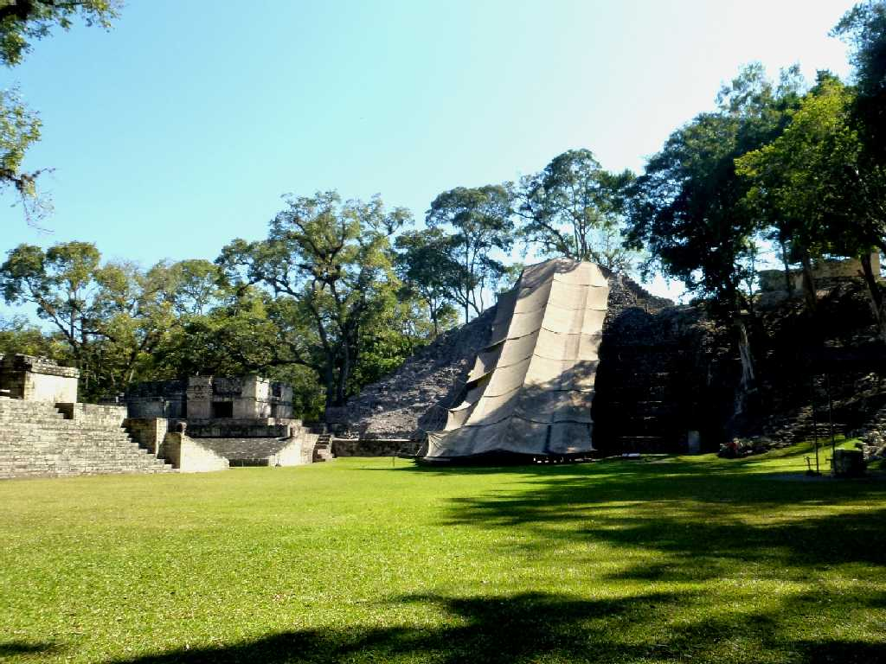
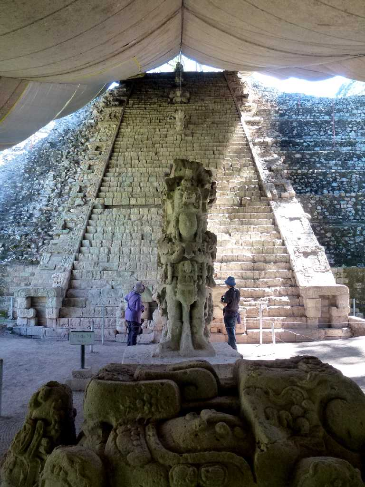
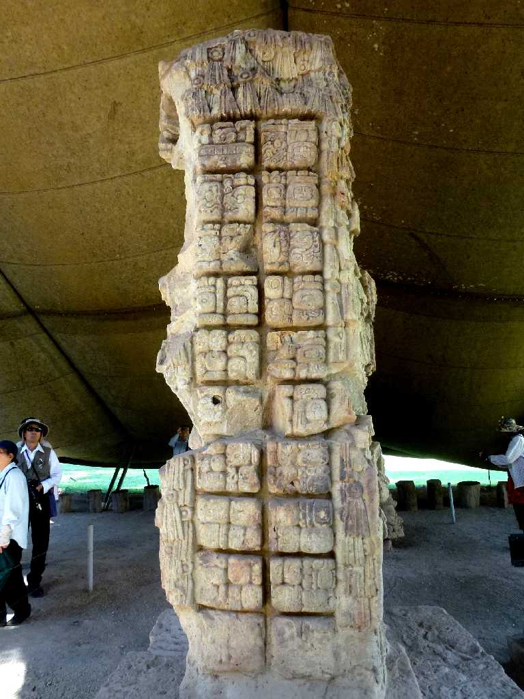
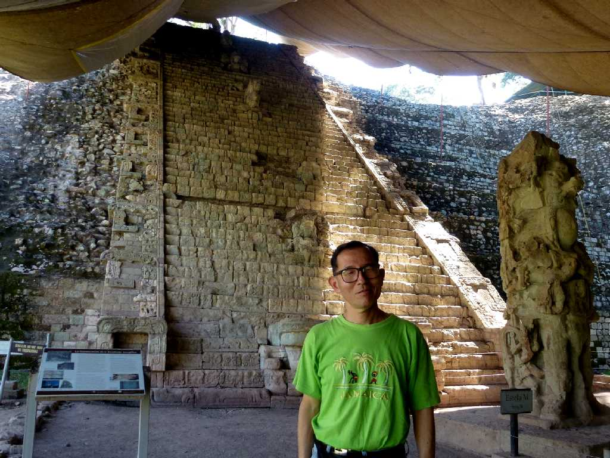
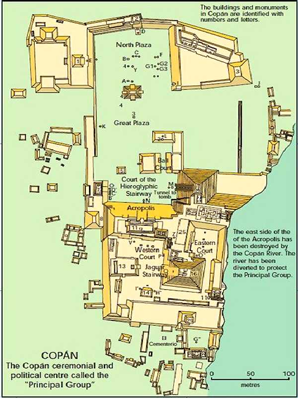

No.26 Pirámide Maya Ruínas Maya Copán
８２２年に創られた高さ３０ｍの２６号神殿の階段に刻まれた２,５００文字以上のマヤ文字はマヤ文明を伝えてくれる

Escalinata Jeroglifica Pirámide Maya
マヤ文字が残るコパン遺跡２６号神殿にある神聖文字の階段はコパン王１８世ヤシュ・パック・カアクの生涯や当時のマヤ文明の歴史と文化が記述されている

Estela Maya

January 30 2013 Copán
Ara Macao Copán
オウム目インコ科の美しいコンゴウインコはコパン初代王の石碑にも刻まれている
